Кто такие Evanescence?
Evanescence — американская рок-группа, основанная в 1994 году в Литл-Роке (штат Арканзас), пишущая песни
в жанрах альтернативный метал, готик-рок, готик-метал, хард-рок, симфоник-метал.
На данный момент у группы вышло 5 студийных альбомов, 2 концертных альбома, 1 сборник, 3 мини-альбома, 2
демоальбома, 18 синглов, 9 промосинглов, 2 видеоальбома и 18 видеоклипов.
История группы
Группа Evanescence была основана в 1994 году в Литл-Роке вокалисткой Эми Ли и бывшим гитаристом Беном Муди, которые познакомились в христианском летнем лагере.
Они начали писать песни "Solitude", "Give Unto Me" и "Understanding", две из которых звучали на местном радио, что повысило интерес к группе и их концертам, когда они начали выступать вживую и, в конечном итоге, стали одной из самых популярных групп в регионе. При выборе названия для группы Бен и Эми рассматривали такие варианты как Childish Intentions и Stricken, но остановились на варианте Evanescence, что значит "исчезновение", "угасание" (от evanesce, что переводится как "угасать"). Под этим названием было выпущено два мини-альбома Evanescence и Sound Asleep в 1998 и 1999 годах в ограниченном количестве.
«Когда эта группа только появилась, мне было лет 14 или около того, и мы занимались в основном
сочинением песен и домашней звукозаписью. Все школьные годы мы с Беном (а позже и с Дэвидом) посвящали все
свободное время песням, записывали их на демо-кассеты, как могли, у себя дома и иногда выступали в клубах и
кафе. Origin — это сборник наших лучших самодельных записей, сделанных в 2001 году (кажется. Может,
в 2000-м...) В общем, тогда мы еще только искали себя, учились писать. Я всегда чувствовал, что с тех пор
наша музыка сильно выросла и стала лучше, и мне хочется продолжать делать ее все лучше и лучше, а не
оглядываться назад. Честно говоря, трудно слушать по-настоящему старые вещи и не посмеяться над собой. Но,
конечно, эти песни всегда будут для меня особенными и будут напоминать о времени, которое было одновременно
прекрасным и ужасным. Так здорово, что они записаны, и я могу вернуться в прошлое и послушать себя в
подростковом возрасте, чтобы вспомнить то, что забыла»
Их демо-альбом Origin был выпущен 4 ноября 2000 года и является сборником демозаписей, сделанным в домашних
условиях. Среди авторов — Эми Ли, Бен Муди и Дэвид Ходжес.
Сборник демо песен. Pre-Fallen эра:
- Evanescence demos vol.1
- Evanescence demos vol.2
Эра Fallen
«Мы пали, но в то же время мы не сломлены. Есть намёк на то, что мы поднимемся вновь»
Список песен:
- Going Under
- Bring Me To Life
- Everybody's Fool
- My Immortal
- Haunted
- Tourniquet
- Imaginary
- Taking Over Me
- Hello
- My Last Breath
- Whisper
В 2001 году группа подписала контракт с Wind-Up Records, их перевезли в Лос-Анджелес и предоставили квартиру и место для репетиций. Ли была очень замкнутой и чтобы преодолеть страх перед сценой, она обратилась за помощью к преподавателю по актёрскому мастерству. За четыре месяца до выхода Fallen из группы ушёл Дэвид Ходжес, желавший чтобы группа стала частью христианской рок-сцены, чего не хотели Эми и Бен. На вопрос об уходе Ходжеса Бен Муди ответил:
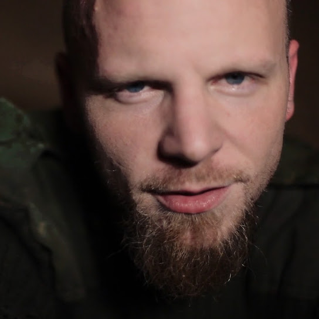
«Мы просто пошли разными путями. Какое-то время мы хорошо работали вместе, а потом... он, наверное, в следующем году выпустит сольный альбом. Если вам удастся это сделать, вы поймете и увидите, насколько это принципиально разные вещи. Мы просто двигались в разных направлениях, поэтому решили разойтись, прежде чем строить весь имидж группы вокруг человека, которого там не будет»В 2018 году Ходжес рассказал, что после встречи группы с лейблом Бен и Эми сообщили ему, что он больше не будет частью группы.
Лейбл отказался выпускать альбом, пока группа не наймёт мужчину-рэпера на постоянную работу, у него должны были быть партии в 8 из 11 песен. Ведущие, слыша женский вокал и пианино в заглавном сингле Bring Me To Life, заявляли: «Девчонка и пианино? Вы шутите? На рок-радио?», некоторые директора выключали песню, не дослушивая её до конца. Но в итоге Эми неохотно согласилась на компромисс и мужской вокал зазвучал в этой песне.
В январе 2003 года, незадолго до выхода Fallen на концерте был продан мини-альбом Mystary как "Fallen Sampler"
22 октября 2003 года группу покинул Бен Муди в середине европейского турне из-за творческих разногласий. О причинах своего ухода он рассказал в письме фанатам, опубликованном примерно через 7 лет. Несколько месяцев спустя Эми Ли рассказала в интервью:
«На самом деле это даже стало облегчением. Я не хочу сказать ничего плохого о Бене, но мы все через многое прошли и были на грани. Дело в том, что если бы что-то не изменилось, мы бы не смогли записать второй альбом.»
Бена заменил бывший гитарист группы Cold Терри Бальзамо. В 2003 и 2004 годах были выпущены синглы "Going Under", "Everybody's Fool" и "My Immortal".
22 ноября 2004 года Evanescence выпустила концертный альбом и DVD-диск Anywhere But Home, который включал в себя запись с концерта в парижском клубе Zenith 25 мая, закулисные съёмки, концертные версии песен "Breathe No More", "Farther Away", кавер-версия песни Korn "Thoughtless", студийная версия "Missing" и видеоклипы с Fallen.
Эра The Open Door
Список песен:
- Sweet Sacrifice
- Call Me When You're Sober
- Weight of the World
- Lithium
- Cloud Nine
- Snow White Queen
- Lacrymosa
- Like You
- Lose Control
- The Only One
- Your Star
- All That I'm Living For
- Good Enough
Второй студийный альбом группы Evanescence вышел 25 сентября 2006, цифровая версия была доступна для предзаказа с 15 августа 2006 года в iTunes Store и Walmart.com, эта версия содержала интервью с Эми Ли и бонусный трек "The Last Song I'm Wasting on You", вошедший позже в сингл Lithium.
Эми Ли сказала, что начнут работу над материалом второго альбома после завершения тура в поддержку Fallen.
«Писать во время тура невозможно, а писать — это то, что я люблю в своей работе больше всего»
Работа над альбомом продвигалась медленно из-за желания Ли погрузиться в творческий процесс и не торопить события и из-за инсульта Терри Бальзамо. Говоря о названии альбома она сказала:
«Мне кажется, я могу делать многое из того, что раньше не мог, по ряду причин... В моей жизни открылось много дверей — и не только после того, как у нас всё произошло»
Альбом был написан за 18 месяцев. Ли призналась, что после ухода Бена она не была ограничена в творческом процессе и могла творить с кем-то в одной комнате, так как с Муди они писали по отдельности из-за серьёзных творческих разногласий. Эми заставила себя сделать то, на что не хватило смелости в первом альбоме. Тексты песен в альбоме гораздо более откровенны, чем те, что она писала раньше.
Песня Together Again, не вошедшая в альбом The Open Door, была выпущена в цифровом формате 22 января 2010 года в поддержку Фонда Организации Объединённых Наций по восстановлению после землетрясения на Гаити. Скачать её можно было бесплатно, но с минимальным пожертвованием в 5 долларов. Позже, 23 февраля 2010 года, она стала доступна для скачивания в цифровом формате.
Эра Evanescence
Список песен:
- What You Want
- Made Of Stone
- The Change
- My Heart Is Broken
- The Other Side
- Erase This
- Lost In Paradise
- Sick
- The End Of The Dream
- Never Go Back
- Swimming Home
В июне 2009 года Эми Ли написала на сайте Evanescence, что группа работает над новым материалом для альбома, который планируется выпустить в 2010 году. Уилл "Science" Хант присоединился к группе в качестве сопродюсера, основного барабанщика и программиста, Уилл Хант стал вторым барабанщиком, Дэвид Кэмпбелл был возвращён для работы над струнными аранжировками. В марте 2009 года Эми анонсировала новые песни в Twitter, но они не были включены в окончательный альбом. Выпуск альбома планировался осенью 2010 года, но 21 июня 2010 года было объявлено, что Evanescence временно покинули в апреле студию, чтобы продолжить работу над альбомом и было сказано, что Wind-Up Records переживает "неопределённые времена", что может лишь сильнее задержать выход альбома.
В апреле 2011 года группа вернулась в студию с новым продюсером. Прежний материал был отбракован лейблом, так как по их мнению это не было похоже на "Evanescence", что вынудило Эми и группу начать всё сначала.
«В итоге я разозлилась настолько, что написала самый тяжелый альбом Evanescence»
В финальный альбом вошли только три песни. Эми заявила, что намерена доработать некоторые из вырезанных песен и выпустить их в будущих проектах.
В июне-июле 2011 года работа над альбомом была наконец завершена. Первый сингл с третьего альбома, названного так же, как и сам альбом, потому что «это самый масштабный проект группы на сегодняшний день», — «What You Want» вышел в августе 2011 года, а в сентябре была снята клип. Альбом под названием Evanescence вышел 11 октября 2011 года в США и на несколько дней раньше или позже в других странах.
После завершения тура в поддержку Evanescence в ноябре 2012 года Эми и группа взяли продолжительный перерыв, сказав:
«В конце любого по-настоящему долгого тура нужно привести мысли в порядок. Думаю, по завершении тура мы сделаем перерыв на какое-то время и все обдумаем»
В октябре 2013 года Wind-up Records продала часть своего каталога исполнителей, включая Evanescence и их мастер-записи, Bicycle Music Company. Объединенная компания Concord Bicycle Music будет заниматься продвижением каталога. 3 января 2014 года стало известно, что Эми подала в суд на бывший звукозаписывающий лейбл Wind-up Records, требуя выплатить группе 1,5 миллиона долларов в качестве невыплаченных авторских отчислений. Иск был урегулирован, и Эми сказала, что ей пришлось подписать соглашение о неразглашении, по которому она не могла говорить ничего плохого. В марте 2014 года Эми сообщила в своём аккаунте в Twitter, что она и Evanescence разорвали контракт со звукозаписывающей компанией и стали независимыми артистами.
Lost Whispers
Список песен:
- Lost Whispers (intro)
- Even In Death (2016 version)
- Missing
- Farther Away
- Breathe No More
- If You Don't Mind
- Together Again
- The Last Song I'm Wasting On You
- A New Way To Bleed
- Say You Will
- Disappear
- Secret Door
В феврале 2016 года Эми Ли объявила, что группа работает над виниловым бокс-сетом. 11 октября 2016 года был анонсирован бокс-сет из шести виниловых пластинок The Ultimate Collection, в который вошли все 3 студийных альбома и Origin, альбом-компиляция Lost Whispers, студийная версия вступления к туру Lost Whispers и студийная запись песни Even In Death. 9 декабря 2016 года Lost Whispers стал доступен для потоковой передачи и загрузки на нескольких музыкальных платформах.
Эра Synthesis
Список песен:
- Overture
- Never Go Back
- Hi-Lo
- My Heart Is Broken
- Lacrymosa
- The End Of The Dream
- Bring Me To Life (Synthesis)
- Unraveling (Interlude)
- Imaginary
- Secret Door
- Lithium
- Lost In Paradise
- Your Star
- My Immortal
- The In-Between (Piano Solo)
- Imperfection
Анонс четвёртого студийного альбома группы Synthesis состоялся 10 мая 2017 года в официальном профиле группы на Facebook. Альбом отличается отсутствием гитар и рок-барабанов, песни исполняет оркестр. Помимо знакомых фанатам песен в альбом вошли две новые композиции: Imperfection и Hi-Lo, которая должна была войти в третий альбом.
Эра The Bitter Truth
Список песен:
- Artifact/The Turn
- Broken Pieces Shine
- The Game Is Over
- Yeah Right
- Feeding the Dark
- Wasted On You
- Better Without You
- Use My Voice
- Take Cover
- Far From Heaven
- Part Of Me
- Blind Belief
17 апреля 2020 года было официально объявлено название и обложка их пятого альбома The Bitter Truth, который выходил частями в течение года. 4 декабря было объявлено, что 12-трековый альбом выйдет 26 марта 2021 года, выпуску которого предшествовали пять синглов: Wasted on You, The Game is Over, Use My Voice, Yeah Right и Better Without You.
Галерея
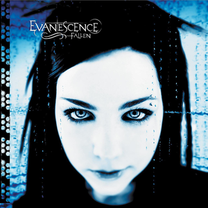
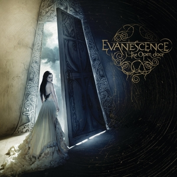
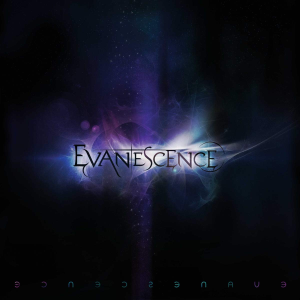
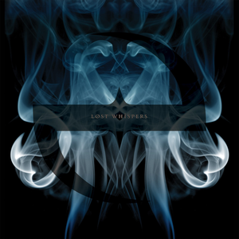
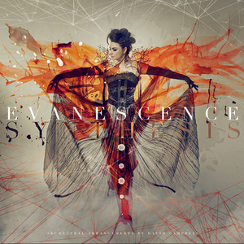
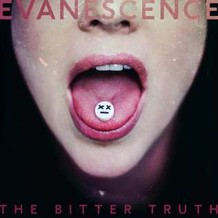
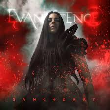
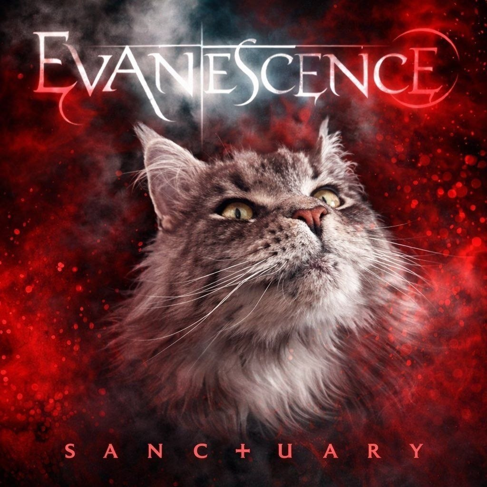
.jpg)
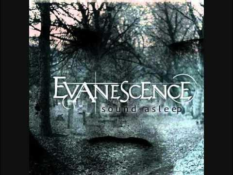
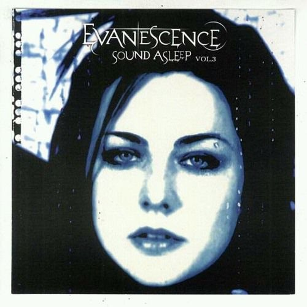
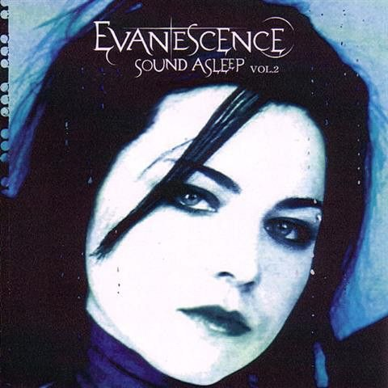
.jpg)
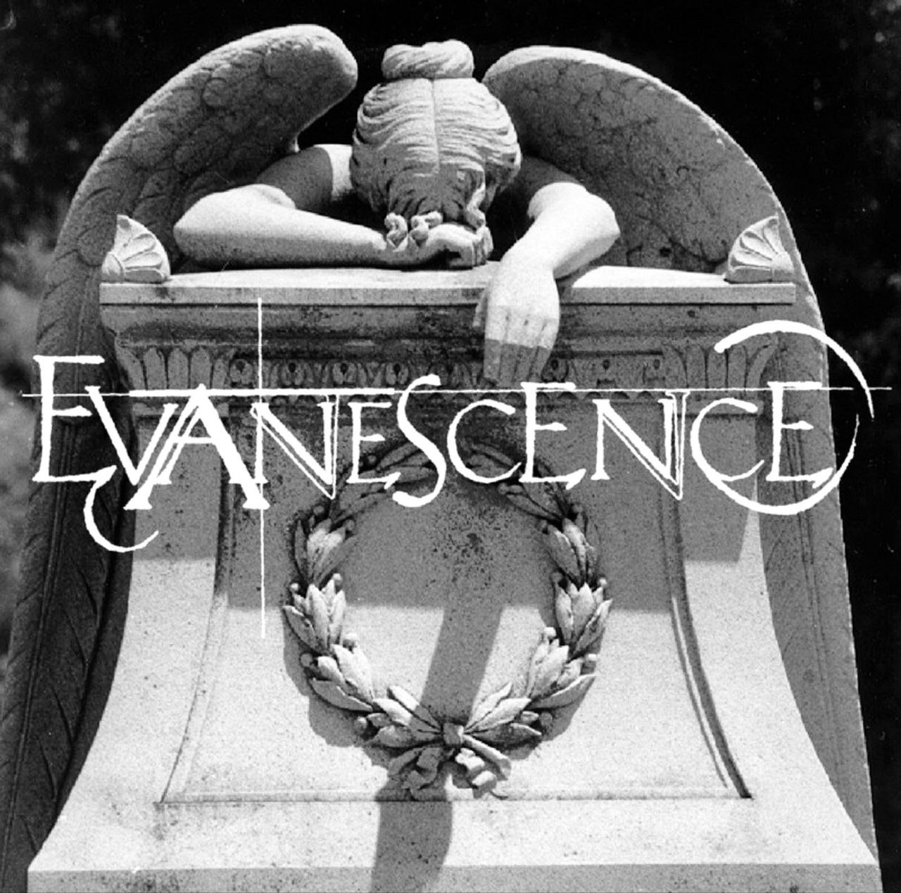
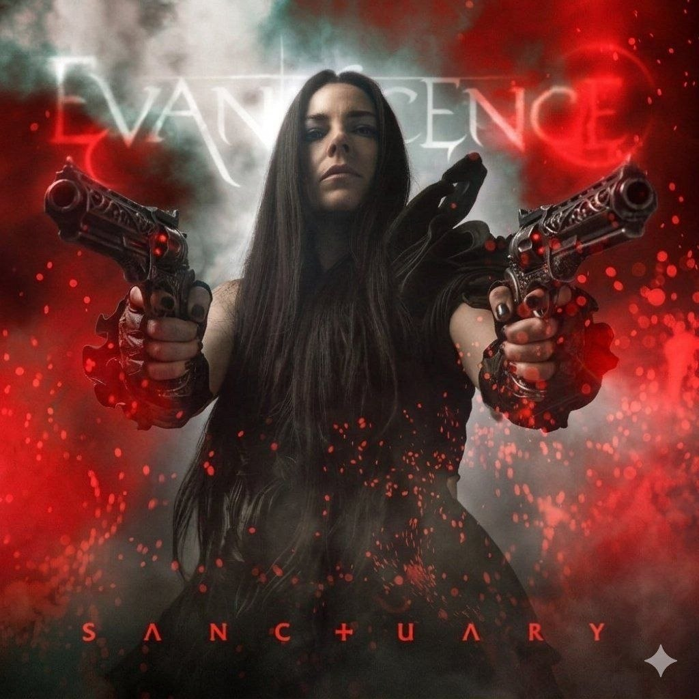